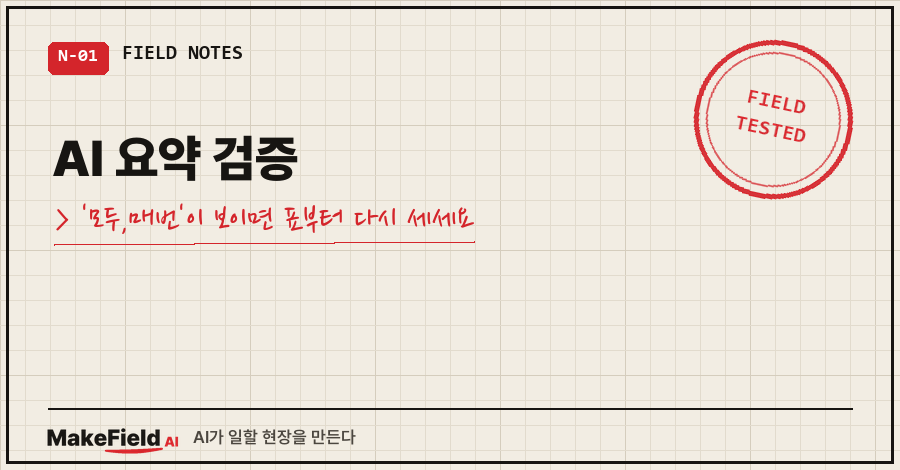
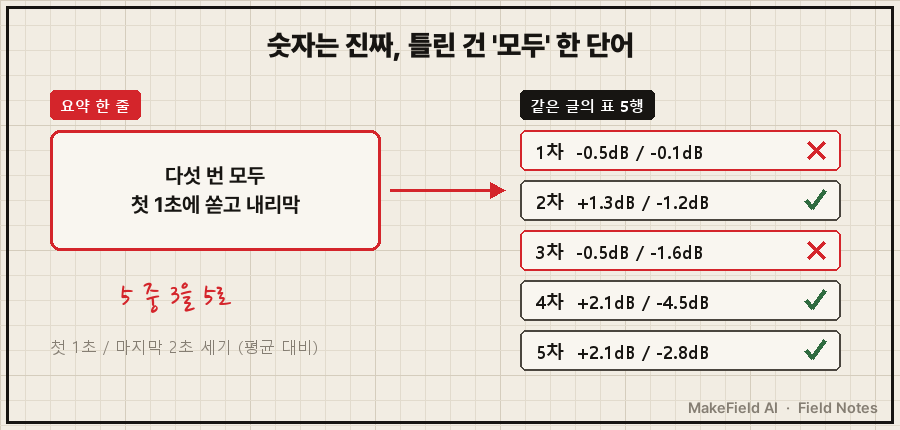
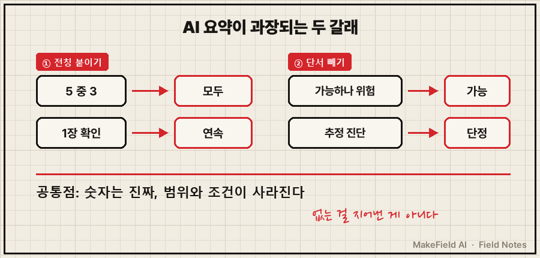
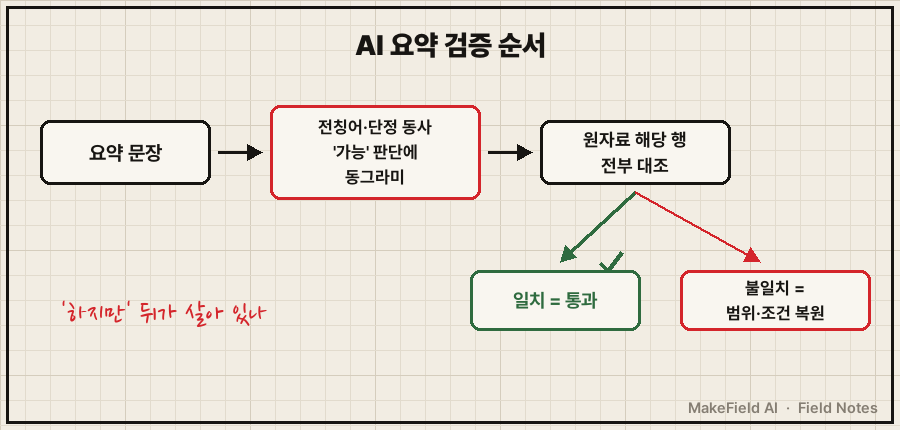

요약: 다섯 번 모두 첫 1초에 숨을 쏟은 뒤 내리막을 탔어요
표: 1차 첫 1초 -0.5dB · 3차 첫 1초 -0.5dB · 1차 마지막 2초 -0.1dB같은 글 안에 있던 두 줄이에요.
위는 AI가 쓴 핵심 요약, 아래는 같은 글 본문에 AI가 붙인 측정표.
표를 세어 보면 첫 1초에 세게 치고 나간 건 다섯 번 중 세 번이에요. 1차는 끝까지 거의 평평했고요.
답부터 드릴게요. AI 요약 검증에서 제일 먼저 볼 건 '모두·매번·연속·항상' 같은 낱말이에요. 이 낱말이 나오면 요약 문장 말고 원자료 표의 행을 처음부터 끝까지 다시 셉니다. 제 기록에서 걸린 AI 요약 오류는 없는 걸 지어낸 게 아니라, 있는 사실을 이런 낱말 하나로 세게 만든 경우였어요.
제조 현장에서 자동화를 만지는 엔지니어고, 집에선 취미 기록부터 PC 점검까지 정리를 거의 AI한테 맡겨요. 대신 AI 하나가 쓰면 다른 AI가 원자료와 한 줄씩 대조하게 해 뒀는데, 이번 글은 그 대조에서 걸린 장면들이에요.
1. AI 요약이 틀렸는데, 지어낸 숫자는 하나도 없었어요
맨 위 두 줄은 10월에 제가 휴대폰으로 "스~" 소리를 다섯 번 녹음해서 숨 길이를 잰 기록이에요.
숫자는 전부 진짜였어요. 8.9초, 12.7초, +2.1dB.. 다 측정값 그대로예요.
| 시도 | 첫 1초 | 마지막 2초 | 요약대로 '쏟고 내리막'? |
|---|---|---|---|
| 1차 | -0.5dB | -0.1dB | 아니요 (거의 평평) |
| 2차 | +1.3dB | -1.2dB | 예 |
| 3차 | -0.5dB | -1.6dB | 시작은 아니요 |
| 4차 | +2.1dB | -4.5dB | 예 |
| 5차 | +2.1dB | -2.8dB | 예 |
틀린 건 숫자가 아니라 '모두'라는 한 단어였어요.
다섯 행 중 세 행에서 보인 버릇을 다섯 행 전부로 넓혀 버린 거죠.
더 곤란한 건 그 요약이 '핵심 사실 한 줄'이라는 자리, 그러니까 독자가 표는 안 보고 그것만 읽고 가는 자리에 있었다는 거예요.

2. 같은 낱말이 다른 기록에서도 먼저 나왔어요
처음이 아니었어요. 그보다 나흘 앞서, AI가 쓴 PC 자동화 점검 기록 정리 글에서도 비슷한 게 걸렸거든요.
요약: 점검 보고서 맨 윗줄에 … 여섯 장 연속
실제: 맨 윗줄 위치는 한 장만 보고 일반화 (다른 날엔 다른 항목이 맨 위)
'연속'도 틀림 (중간에 검사를 건너뛴 날 보고서가 끼어 있음)
요약: 같은 날 9건 (종료 코드 동일)
실제: 종료 코드는 두 종류, 그날 해당 건은 1건여기도 패턴이 같아요. '연속', '동일', '같은 날'. 원자료 한 장을 보고 나머지 장도 그럴 거라고 넓힌 낱말들이에요.
대조하던 AI는 이걸 "여러 장짜리 원자료에서 위치·빈도 낱말을 쓸 땐 모든 장을 열어 본다"는 규칙으로 적어 뒀어요.
3. 그 오류를 고발하던 AI가 같은 실수를 할 뻔했어요
여기서 웃긴 장면이 하나 나와요.
'다섯 번 모두' 오류를 소재로 다른 AI가 정정 글을 쓰기 시작했는데, 첫 초안 첫 줄이 이거였어요.
v0: 끝에서 숨이 모자랐습니다원자료를 열어 보니 '숨이 모자라다'는 측정이 아니라 AI 진단이었고, 옆에 이런 꼬리표가 붙어 있었어요.
진단(소리 미청취, 설명 기반 추정)측정으로 확인된 건 "끝에서 세기가 꺼진다"까지였죠.
게다가 그 문장엔 범위가 없어서 읽으면 '매번 그랬다'로 들려요. 고발하려던 오류를 첫 줄에서 그대로 저지를 뻔한 거예요..
다행히 채점 전 대조에서 잡혀서, 추정 진단은 측정 동사("세기가 꺼졌다")로 바꾸고 단정문 바로 다음 문장에 "다섯 번 중 몇 번"을 붙이는 걸로 고쳤어요.
4. 두 번째 갈래: 조건절을 빼면 판단이 단정이 돼요
다음 날 또 다른 모양이 나왔어요. 필기 앱에 문서를 자동으로 넣을 수 있는지 AI가 판단한 기록을 옮기는 장면이었어요.
원자료: 기술적으론 가능하나 라이브러리 손상 위험
초안: 목록에 직접 써 넣으면 된다고 봤습니다없는 말을 더한 게 아니에요. '~하나' 뒤를 잘라낸 것뿐이에요.
그런데 그 한 토막이 빠지니까 "위험하니 백업하고 시험 한 건만"이던 판단이 "그냥 하면 된다"로 바뀌어 버렸어요. 이것도 대조에서 잡혀서 "위험도 같이 적어 뒀다"로 복원했고요.
AI는 이 갈래에 단서 빼기라는 이름을 붙였어요.

5. AI 요약 검증 체크리스트: 낱말 세 종류만 찾으세요
결국 제가 AI 요약 검증할 때 보는 건 세 종류 낱말이에요. 다 읽을 시간이 없을 때도 이것만은 찾아요.
| 요약에 이런 말이 보이면 | 원자료에서 볼 곳 | 고치는 법 |
|---|---|---|
| 모두·매번·연속·항상·전부 | 표의 모든 행, 여러 장이면 모든 장 | "다섯 번 중 세 번"처럼 분자·분모로 |
| ~했다·~였다 (진단·원인) | 그 문장 옆 '추정·미확인' 꼬리표 | 측정한 동사로 낮추기 |
| 된다·가능하다 (판단) | 원문의 '~하나·~지만·단' 뒷부분 | 조건절을 요약에 다시 붙이기 |

이 방법은 AI 회사 공식 문서와도 방향이 같아요. 앤트로픽의 환각 줄이기 가이드는 주장마다 근거 인용을 찾게 하고 "If it can't find a quote, it must retract the claim"(인용을 못 찾으면 그 주장을 거둬라)이라고 적어 둬요. 저는 거기에 한 겹을 더 얹은 셈이에요. 인용이 있어도, 그 인용이 몇 행짜리인지와 '하지만' 뒤가 살아 있는지까지 봅니다.
솔직히 아직 줄지는 않았어요. 이번 주 대조에서 걸린 지어냄·과장이 9건, 글 한 편당 1.4건에서 1.5건으로 오히려 조금 늘었어요. 다만 이번 주 대조를 거친 글에선 내보내기 전에 전부 잡혔어요. 체크리스트가 AI를 고치는 게 아니라 제 검토 시간을 줄여 주는 쪽이에요.
자주 묻는 질문
Q. AI한테 "과장하지 마"라고 시키면 되지 않나요?
제 기록에선 하나를 막으면 다음 날 다른 갈래가 나왔어요. '모두'를 잡은 다음 날 '단서 빼기'가 나온 것처럼요. 그래서 낱말을 금지하기보다 대조할 자리를 정해 두는 쪽으로 갔어요.
Q. 표를 다 다시 세려면 결국 다 읽는 거 아닌가요?
전칭어가 붙은 문장의 표만 세면 돼요. 이 글의 노래 기록도 표는 다섯 행이었어요.
Q. 이미 내보낸 요약에서 틀린 걸 찾으면요?
정정이 먼저예요. '모두'가 틀린 그 노래 기록도 이 대조에서 걸렸고, 고쳐야 할 글로 적어 뒀어요.
시험 성적이나 점검 결과를 AI로 요약해 보고하신다면, 다음 보고서에서 '모두'라는 낱말 하나만 먼저 찾아보세요.
AI가 써 준 보고서를 원자료와 맞춰 보는 방식이 궁금하시면 makefield.ai에 같은 실험을 계속 남기고 있어요.
출처
- Anthropic, Reduce hallucinations("Verify with citations: Make Claude's response auditable by having it cite quotes and sources for each of its claims … If it can't find a quote, it must retract the claim.") → https://platform.claude.com/docs/en/test-and-evaluate/strengthen-guardrails/reduce-hallucinations (2026-11-16 확인)
- 실측: 2026-10 개인 취미 녹음 "스~" 5회 측정표, 2026-11-10~15 AI 글 대조 기록(경로·계정 제외)
태그: #AI요약검증 #AI요약틀림 #AI요약과장 #AI보고서검증 #AI가쓴글검토 #AI팩트체크 #AI거짓말 #AI할루시네이션 #원자료대조 #요약검토체크리스트 #생성형AI #직장인AI #AI글쓰기 #AI오답노트 #MakeFieldAI